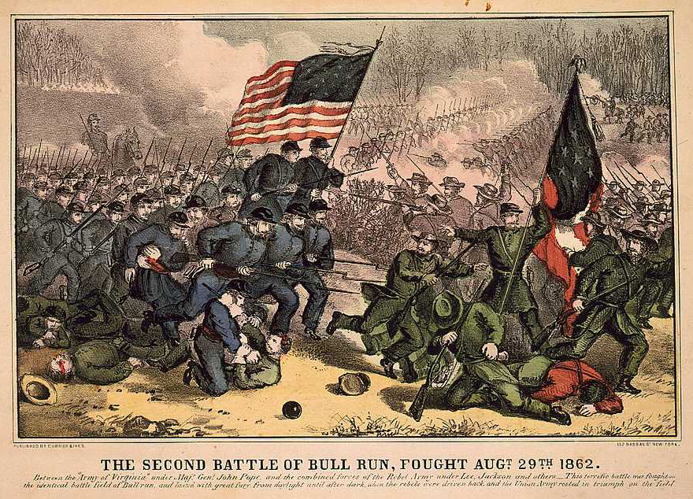

|
The First Battle of Bull Run, also called First Manassas,
was the first major engagement of the Civil War. The battle
took place on July 21, 186l. Southern troops inflicted a
humiliating defeat on northern forces. The Second Battle of
Bull Run, or Second Manassas, was fought on August 29 and
30, 1862. In this battle, Confederate forces once again
defeated the Union troops. Northerners named the battles
after Bull Run Creek, while southerners referred to it by
the name of the nearby town of Manassas.
Following the Confederate capture of Fort Sumter in April
1861, both sides spent the next three months preparing their
troops for action in the eastern theater. Men from North
and South responded to the call to arms, and the ranks of

Thomas J. Jackson earned the nickname
"Stonewall" at the First Battle of Bull Run.
|
both armies swelled with thousands of new and untrained
recruits. Northern soldiers enlisted for ninety days and by
July, those enlistments were nearly done. President Abraham
Lincoln pushed his commanders to fight the Confederates
before the Union army lost its recruits. Although Union
General Irvin McDowell, head of the Eastern Union Army, was
not sure that his men were truly ready for combat, he
complied with Lincoln's wishes.
On July 21, McDowell set out with about 28,000 troops to
capture the Confederate capital of Richmond, Virginia. Only
2,000 of his men were experienced soldiers, while the
remainder had volunteered at the outbreak of hostilities.
McDowell expected to encounter about 20,000 Confederate
soldiers under the command of General Pierre Gustav Toutant
Beauregard. McDowell did not know that 12,000 additional
southern troops had reinforced Beauregard's troops. Word
reached Washington, D.C. that the two sides would meet near
the town of Manassas, about 25 miles southwest of the Union
capital. A number of Washington residents traveled out to
watch what most Yankees expected would be a rout of the
Confederate troops.
McDowell's men launched several attacks, pushing back the
Confederate forces. Then Confederate resistance stiffened,
led by General Thomas J. Jackson. One Confederate commander
told his men, "Look, there is Jackson standing like a stone
wall," giving the general his famous nickname. After
halting the Union advance, Beauregard ordered a
counterattack. The inexperienced federal troops broke under
the pressure and fled the battlefield in panic. The
observers from Washington also ran back toward the capital,
amazed that the Confederates had defeated the Union forces.
The victorious rebels had suffered 1,982 casualties: 387
killed, 1,582 wounded and 13 missing. Northern losses were
greater-460 killed, 1,124 wounded, and 1,312 missing for a
total of 2,986. President Lincoln responded to the
embarrassment by removing McDowell and replacing him with
General George McClellan. The battle also revealed that
defeating the South would be much more difficult than many
in the North had expected.
By the Second Battle of Bull Run, fought in August of
1862, both armies were battle-tested. General Robert E. Lee,
now in command of Confederate forces, sought to defeat a
Union army under the command of General John Pope. Lee knew
that two separate Union forces threatened his troops in
Virginia. Pope commanded about 55,000 men in central
Virginia, while George McClellan had about 100,000 men near
Washington. President Lincoln had ordered the two Union
forces to unify under McClellan's command, a fact known to
|

The Second Battle of Bull Run, in a
hand-colored Currier & Ives print from 1862.
|
the Confederates. Realizing that his forces would be
outnumbered three to one if the Union plan succeeded, Lee
determined to give battle at once to destroy Pope's army
before it could join with McClellan's.
Lee sent Stonewall Jackson to observe the federals and
Jackson won a battle on August 9 at Cedar Mountain. The
Confederate victory did not provoke an immediate Union
response, so Jackson led a raid that resulted in the
destruction of Pope's supply depot at Manassas on August 27.
Angered at the loss of supplies, Pope moved against
Jackson's positions and launched his 55,000 troops against
Jackson's 12,000 on August 29. The Southerners held out
against Pope's poorly coordinated attacks, while Lee and
General James Longstreet, commanding the remainder of Lee's
50,000 men, hurried to join forces with Jackson. Pope
refused to believe reports that Longstreet had arrived with
reinforcements and launched a new attack against Jackson's
troops. Longstreet's men raked the advancing northerners
with artillery fire, breaking the attack. Lee then ordered
Longstreet to attack and outflank the Union forces. The
Confederate troops turned the Union left flank and forced
them to retreat. Unlike the First Battle of Bull Run,
northern troops retreated in good order and remained intact.
During the campaign, the South recorded 9,200 dead, wounded
or missing in action while Union casualties numbered 16,000.
The Confederate victory dashed Northern hopes for conquering
Virginia quickly. Meanwhile, Lee and his army, coming off a
string of victories in the summer and fall of 1862, decided
to take the war North and invaded Maryland in September.
Source: Joan Waugh, ed., Facts on File Encyclopedia of American
History: Civil War and Reconstruction, 1856 to 1869 (New York: Facts on
File, 2003), 42-44.
|